Recital de corno y piano
Programas temáticos con pianista colaborador: música armenia, sacra y barroca, España, Mozart y el gran repertorio romántico.
- Programa a medida y notas al programa
- De 60 a 90 minutos
- Salas, iglesias y auditorios

Solista de corno francés
Recitales, música de cámara y conciertos con orquesta. Del barroco al jazz, de Mozart a Komitas.

Tigran Ter-Minasyan pertenece a la cuarta generación de una familia de músicos armenios. Corno principal de la Orquesta Sinfónica Nacional del Ecuador, desarrolla además una intensa carrera como solista y músico de cámara: solo entre 2025 y 2026 ha presentado más de una docena de programas de concierto en Quito.
Su repertorio va de Bach y Vivaldi a Mozart y Glière, pasa por la música armenia de Komitas, Khachaturian y Babajanyan, y llega al jazz y al soul. Como director artístico ha impulsado el ciclo Música Armenia, junto a Denis Daniilidis, y el Homenaje a Mikis Theodorakis.
Fuera del escenario enseña corno online a músicos de nivel intermedio y avanzado, imparte masterclasses y lleva conciertos didácticos a escuelas y colegios.
Programas recientes como solista, en recital y en música de cámara. Toca un póster para verlo completo.
Solista invitado con la Orquesta Sinfónica UTE, dirección de Iván Acosta
Capilla UTE, Quito
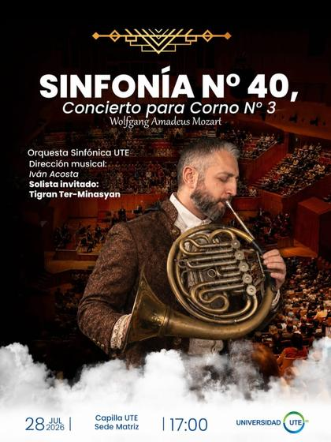
Con Raimon Rovira, piano, y Martín Iturralde, batería
Quito Jazz Club
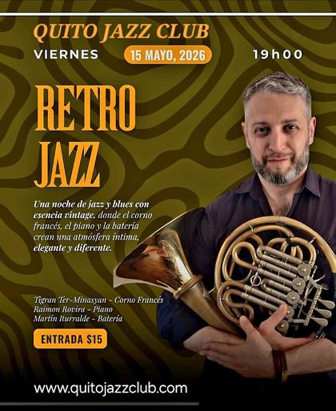
Producción con Denis Daniilidis; con Alex Alarcón, Marine Harutyunyan, Bjarke Lund y Martín Iturralde
Teatro Beethoven, Quito
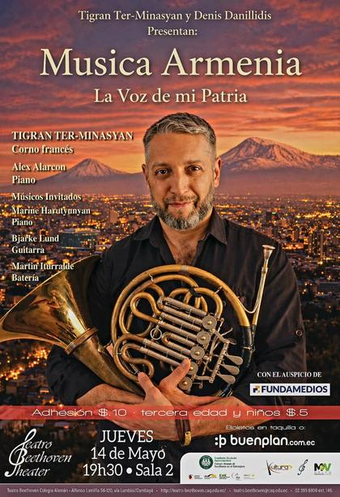
Con John Peter, voz, Raimon Rovira, Cayo Iturralde, Carlos Albán y Gilberto Rivero
Casa de la Música, Quito

Corno y narración, con Nathaly Palacios, voz, y Paco Godoy, órgano y piano
Iglesia de San Agustín, Centro Histórico de Quito
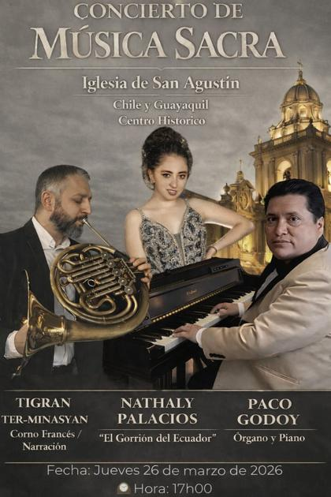
XXIV Festival Internacional de Música Sacra, con Alex Alarcón, piano
Iglesia de la Medalla Milagrosa e Iglesia del Carmen Alto, Quito
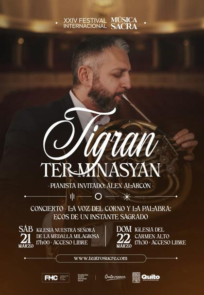
Corno y narración, con Alex Alarcón, piano y órgano
Iglesia Luterana El Adviento, Quito

Con Alex Alarcón, piano. Obras de Babajanyan, Khachaturian y Komitas
Casa de la Música, Quito
Dirección musical y corno, con Nataly Osorio, Daniel Herrera y Martín Iturralde
Teatro Beethoven, Quito

Con Alex Alarcón, piano, y Martín Iturralde, percusión
Centro Español, Quito

Semana del Jazz en Quito, con Raimon Rovira, piano, y Martín Iturralde, percusión
Quito

Con Alex Alarcón, piano, y Martín Iturralde, percusión
Centro Español, Quito
Grandes baladas del siglo XX, con Raimon Rovira, piano, y Carlos Albán, batería
Quito Jazz Club

Con Alex Alarcón, piano
Teatro Beethoven, Quito
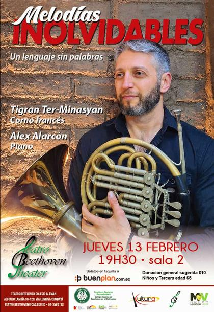
Con Alex Alarcón, piano. Obras de Bach, Vivaldi, Komitas y Glière
Fundación Pueblos de América, Quito

Con Alex Alarcón, piano
Fundación Pueblos de América, Quito

Escúchalo en concierto.
Recital de corno
Música de cámara
Corno y jazz
Para festivales, salas, instituciones culturales y eventos privados. Cada programa se adapta a la sala y al público.
Programas temáticos con pianista colaborador: música armenia, sacra y barroca, España, Mozart y el gran repertorio romántico.
Trío o cuarteto con piano y batería: baladas, jazz clásico y soul, con el corno como voz principal.
Conciertos para corno y orquesta del repertorio clásico y romántico, para temporadas sinfónicas y festivales.
Concepto, programa, músicos y puesta en escena para ciclos, homenajes y eventos institucionales.
Para conservatorios, universidades, orquestas juveniles, festivales y colegios. Clases presenciales en Ecuador y en gira.
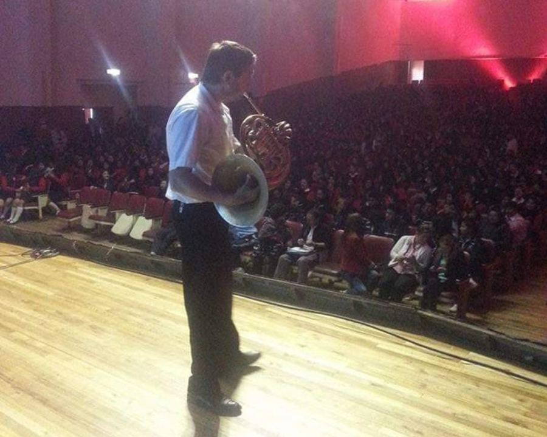
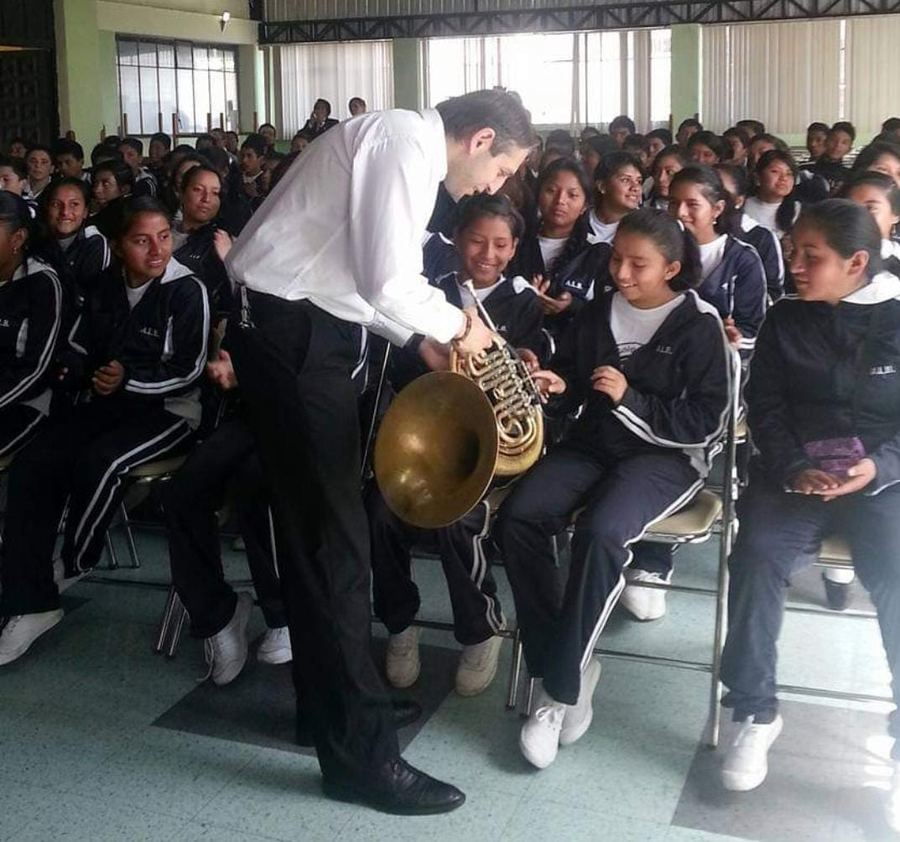

Clase abierta de 2 a 3 horas con alumnos activos y oyentes: sonido, técnica, fraseo y preparación de repertorio.
La masterclass y, ese mismo día o al siguiente, un recital de corno y piano para la comunidad.
De 2 a 3 días: masterclass, clases individuales, sesión de música de cámara y concierto final con los alumnos.
Un concierto explicado para que niños y jóvenes descubran el corno francés de cerca, con espacio para preguntas.
Clases individuales para músicos de nivel intermedio y avanzado, centradas en tu repertorio y tus objetivos.
Escríbeme con tu nivel, el repertorio que estás trabajando y tu zona horaria.
Escucho cómo tocas, identificamos prioridades y te propongo un plan de trabajo.
Consultar por WhatsApp60 minutos sobre el repertorio que elijas: sonido, articulación, fraseo e interpretación.
Consultar por WhatsApp4 clases al mes, revisión de tus grabaciones entre clases y un plan de estudio semanal.
Consultar por WhatsApp8 clases para preparar extractos orquestales o un recital, con simulacro de audición al final.
Consultar por WhatsApp


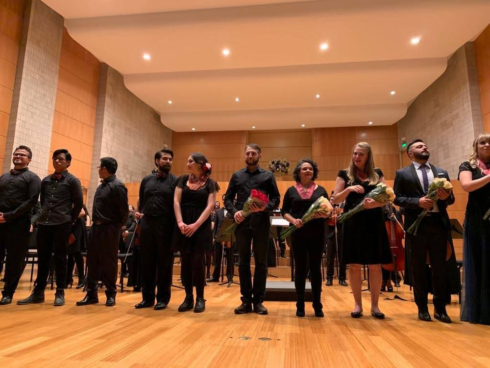
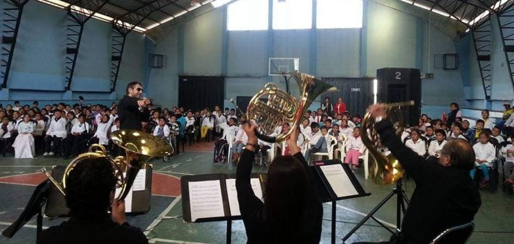
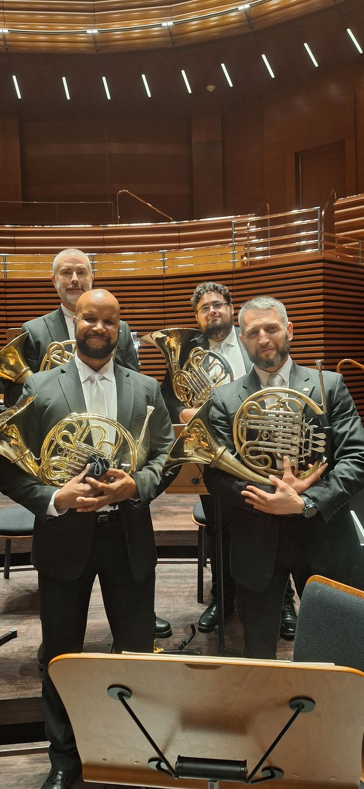
Para contrataciones, masterclasses o clases online, escríbeme y te respondo personalmente.
Con base en Quito, Ecuador. Disponible para giras y clases online en todo el mundo.